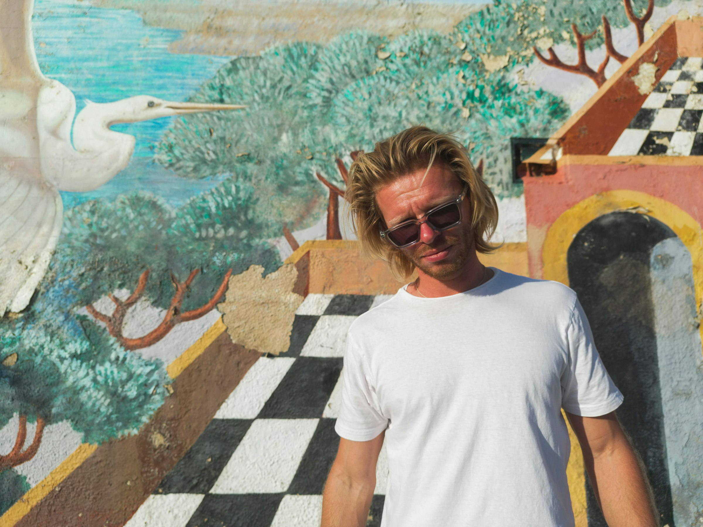
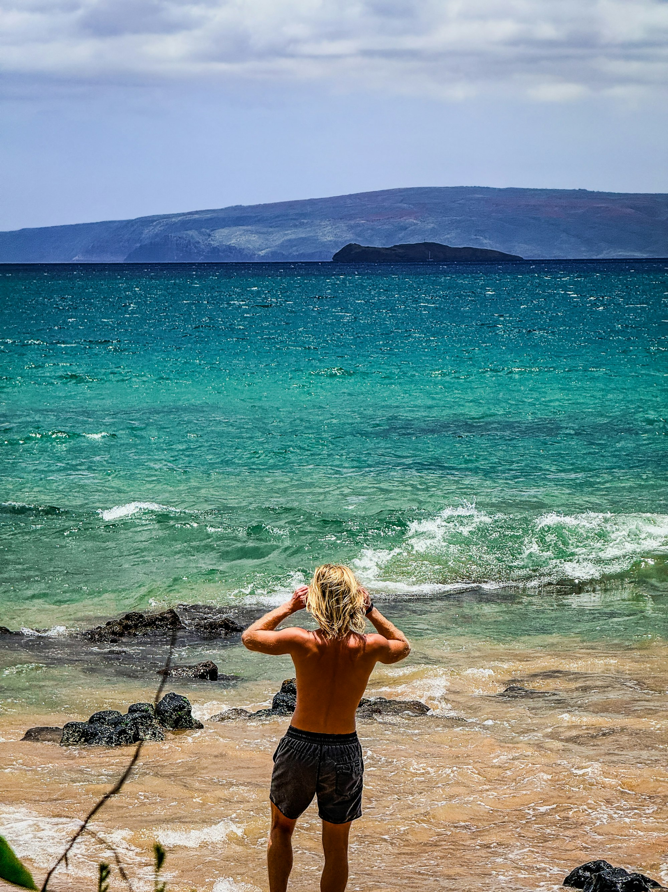
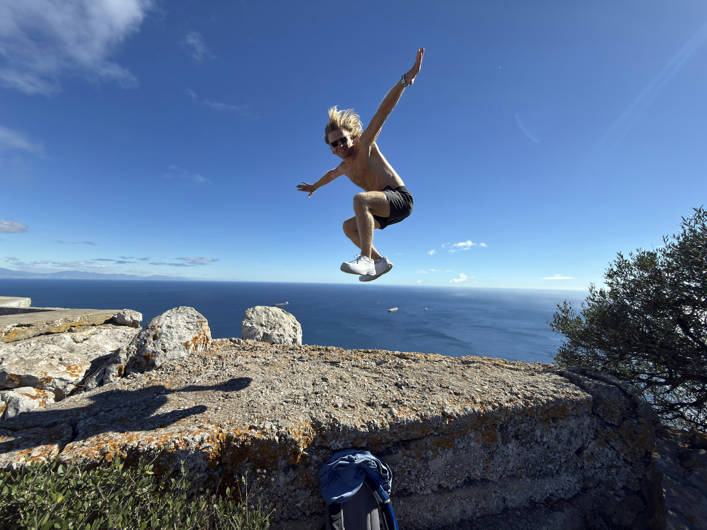

About
Logan Voss is DeltaX.
Musician and producer. Based in Los Angeles.

Work
The catalog
Logan started as a rapper under the name LOVO. Production took over, and the project became DeltaX.
There is no single genre. Dance, house, hip-hop, meditation, and a lot in between. 25+ albums. Hundreds of releases. Fifteen years of work.
Background
San Francisco. Chicago. Los Angeles.

Born in San Francisco on December 25, 1995. Moved to Chicago at ten. Came back to California for college and stayed in Los Angeles.
Reach
How people found the music
When streaming was slow, Logan put the catalog on Pixabay for anyone to use. The tracks showed up in films, TV, ads, and videos. Over 100,000 downloads. The streams came after.

Now
Records, photos, and tools
Music is still the main work. Logan also shoots his own photos, designs covers, and builds small apps.
Most of the DeltaX catalog is not AI. He started using AI music tools to learn the new landscape, not to replace how he makes records. The songs came out unfinished. That is why he built Champagne.